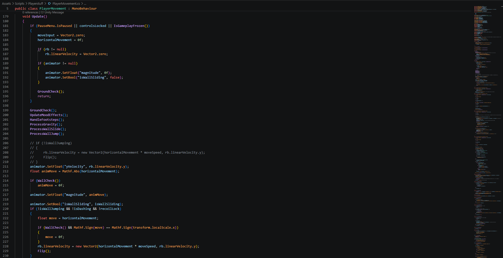
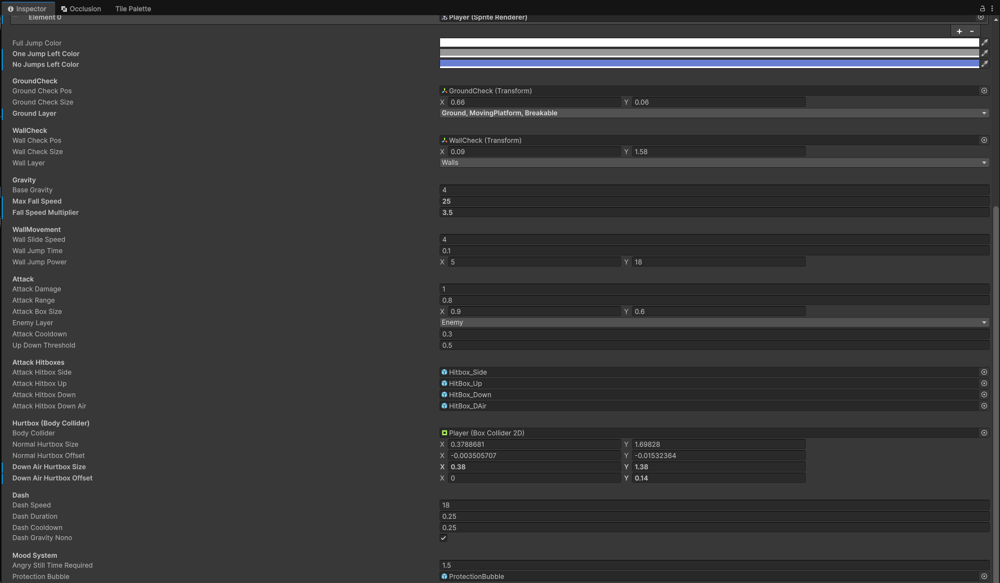
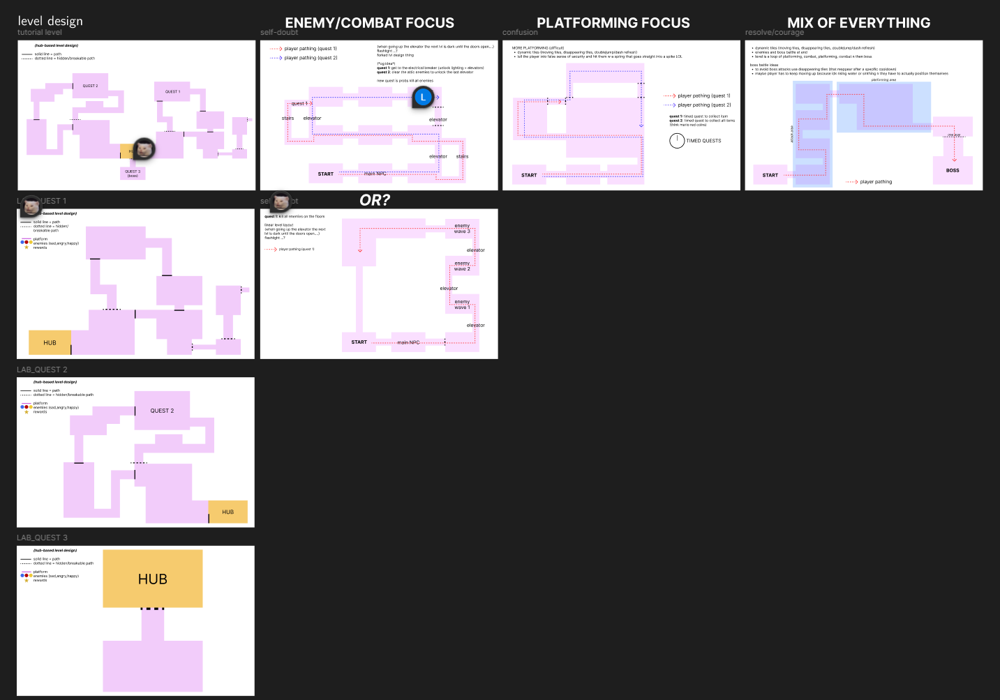
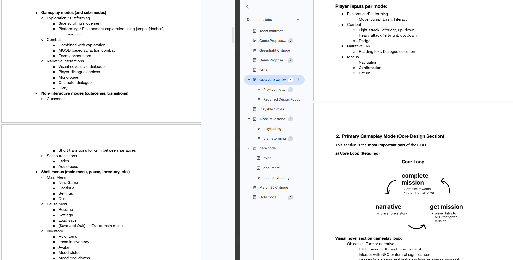
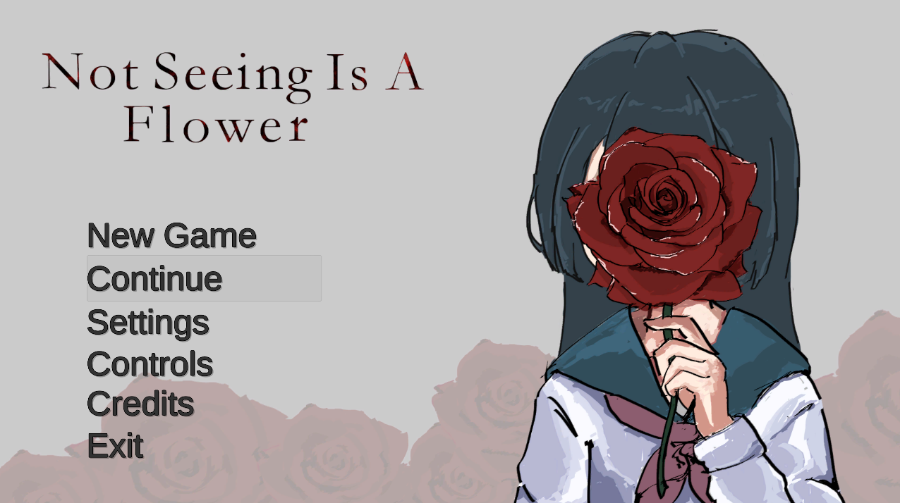

Not Seeing Is A Flower
A 2D platformer with visual novel elements built in Unity. I served as programmer and project manager, designing and scripting core gameplay systems while keeping the team aligned through development.

From Mechanics to a Playable Experience
For my process analysis, I will be focusing on Not Seeing Is A Flower, a 2D platformer game I co-developed in IAT 410. The project challenged our team to design playable levels that taught movement, abilities, and the game's core loop over time, while maintaining clear progression, challenge, and player motivation. Our goal was not only to create finished levels, but to build an interactive experience where mechanics, level design, and feedback all supported the player's learning.
My role was both programmer and project manager. I scripted key gameplay systems in Unity using C#, including player movement, double jumping, wall jumping, dashing, attack hitboxes, enemy interactions, checkpoints, hazards, and quest progression. I also helped organize deadlines, communicate updates, and keep the team aligned with project milestones and scope.
Beyond programming, one of my biggest responsibilities was helping the team stay organized. At times, our team communication became inconsistent, which made it harder to track what had been completed, what still needed work, and how each part of the project connected together. To address this, I took initiative by asking for more frequent progress updates instead of only checking in around major due dates. I communicated the steps I planned to take, shared what I was working on, and encouraged the rest of the team to give updates whenever they could. This helped keep everyone on the same page and made it easier to adjust our scope as the project developed.
Early playtests showed that our mechanics were functional, but not always clearly taught. Players understood that abilities existed, but they were often unsure when to use them, how to combine them, or what the game expected them to learn next.
One of the main design challenges was teaching the player our mechanics in a way that felt clear without becoming overly restrictive. In earlier versions, the game introduced movement abilities too abruptly. Players were given access to mechanics such as dashing, wall jumping, and double jumping, but the level did not always guide them toward understanding how those abilities should be used. As a result, some players felt lost or relied on trial and error rather than learning through the level design itself.
To better understand the problem, I gathered feedback from playtesters with different levels of platforming experience. Some were familiar with platformers, while others were newer to the genre, which helped me compare what felt intuitive to experienced players versus what needed clearer onboarding for beginners. Based on this feedback, I ideated changes to the level structure, added clearer progression moments, and removed or adjusted parts that made the experience feel confusing. A major change was building the game's difficulty scaling around quest progression, so each ability was introduced at a specific point in the game and then practiced shortly after. This made the game more linear than we originally imagined, but it helped balance accessibility, clarity, and fun.
The final outcome was a playable platformer level with ability progression, NPC dialogue, enemies, hazards, and a clear ending. This project represents the professional ethos I want my portfolio to communicate: I am a designer-developer who can connect technical implementation with thoughtful player experience and team communication.
One detail I'm particularly proud of: during playtesting, testers found that the enemy AI pathing had unintended gaps that allowed for difficult speedrun strategies. I made the deliberate choice to keep them in — they were hard enough to pull off that they rewarded skilled players without breaking the intended experience. It was a small moment, but it taught me that good game design involves knowing when not to patch something.
If I continued the project, I would refine the onboarding, improve visual feedback for abilities, and conduct more playtesting earlier in the process. Through this project, I learned that strong interactive design depends on iteration, testing, and clear communication — not just polished features or technical complexity.
Project Artifacts
Gameplay Screenshots


Unity Scripts & Inspector


Early Level Sketches & Notes


Title Screen Art
